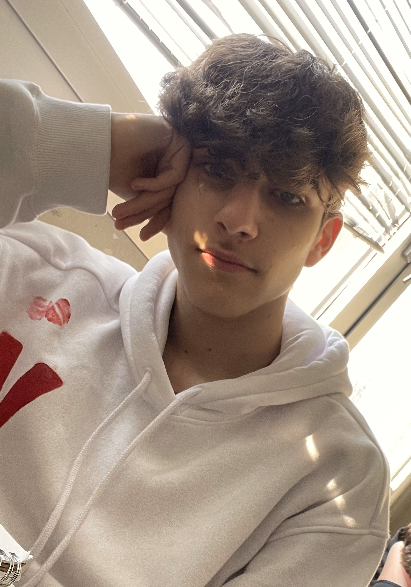

Chi sono?
Nome: Fabio
Cognome: Monaco
Età: 17 anni
Classe e Istituto: 3A INFO, IIS J.C. Maxwell
Data di nascità: 04/04/2007
Luogo di residenza: Moncalieri (TO)
Foto:

Curiosità:
Sono un ragazzo semplice, cresciuto in una famiglia dolce e amorevole.
Sono responsabile e autonomo.
Nella vita penso sia importante legare con le persone giuste, persone che possano aiutarti a crescere e migliorare sotto ogni punto di vista.
Interessi:
Calcio: Per me il calcio è molto più di uno sport, lo seguo da quando sono bambino e sono un grandissimo tifoso della Juventus. Ogni weekend, nel tempo libero, seguo diverse partite della Serie A.
Fantacalcio: Una passione coltivata negli ultimi anni e che ormai fa parte di me. Ogni settimana non vedo l'ora che arrivi il weekend per sfidare i miei amici e provare a batterli.
F1: Una passione che mi è stata trasmessa da mio padre e da mio nonno. Tifo Ferrari, e ogni weekend di gara spero in una vittoria della Rossa o quanto meno in gare divertenti e mozzafiato.
Competenze:
1)Abilità informatiche: Queste competenze le ho acquisite a scuola e le utilizzo principalmente a scuola ma anche per dei compiti extra-scolastici.
2) Abilità sportive: Mi ritengo abbastanza bravo in quasi tutti gli sport, calcio l'ho praticato per 5/6 anni fuori da scuola mentre tutti gli altri sport gli ho conosciuti grazie alle ore di educazione fisica.
3)Abilità in cucina: Sono molto bravo a cucinare e mi piace sperimentare nuove ricette insieme alla mia ragazza.
Obiettivi:
-Trovare un bel lavoro;
-Fare una famiglia:
-Sposarmi;
-Essere a posto economicamente;
-Essere sempre in salute.
Citazione che mi rappresenta:
"Ho due sogni: il primo è giocare un mondiale, il secondo è vincerlo." -Diego Armando Maradona
Perchè io sono una persona molto competitiva, e se voglio una cosa la ottengo.